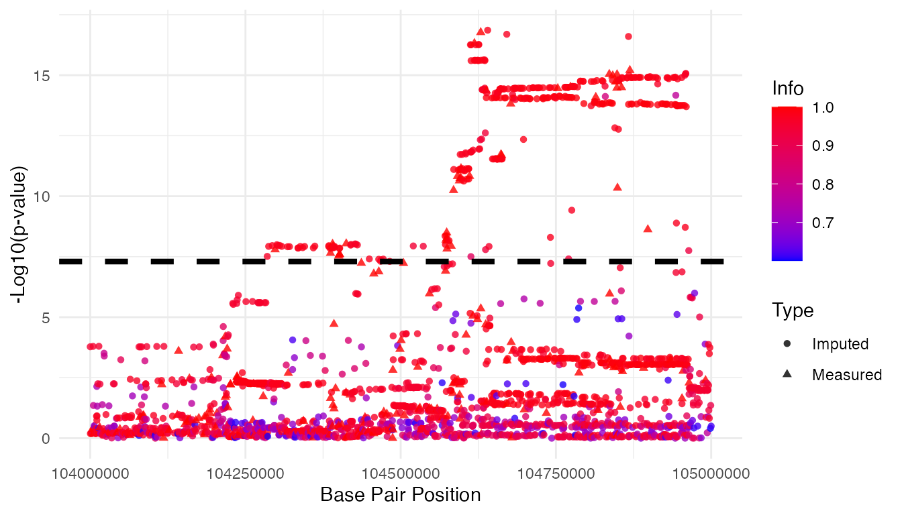

Introduction
The growing availability of larger, more ethnically diverse reference
panels has increased the need for efficient re-imputation of genotype
data and updated GWAS. The GAUSS package streamlines these tasks with
its two specialized functions—dist() and
distmix()—for imputing association Z-scores for unmeasured
SNPs. This vignette will guide you through the practical application of
both dist() and distmix() for imputing
association Z-scores in both ethnically homogeneous and multi-ethnic
cohorts.
Load necessary packages
# Load necessary packages
library(gauss)
library(tidyverse)
library(data.table)
library(kableExtra)Preparing the Input Data
Both dist() and distmix() functions require
two core input datasets:
- Association Z-score Data
- Reference Panel Data
Association Z-score Data
This data should be in the form of a space-delimited text file including six columns with the following names:
-
rsid: SNP ID -
chr: Chromosome number -
bp: Base pair position -
a1: Reference allele -
a2: Alternative allele -
z: Association Z-score
For this example, we will use the Psychiatric Genomic Consortium’s Phase 2 Schizophrenia (PGC SCZ2) GWAS dataset.
# Path to the input file
input_file <- "../data/PGC2_3Mb.txt"
# Input file should include six columns (rsid, chr, bp, a1, a2, and z)
input.data <- fread(input_file, header = TRUE)
head(input.data)
#> rsid chr bp a1 a2 z
#> 1: rs1004467 10 104594507 A G 6.686674
#> 2: rs1008013 10 103548866 A T -1.769923
#> 3: rs10128116 10 103717613 A G -1.883298
#> 4: rs1015037 10 105547517 T G -1.917614
#> 5: rs10159775 10 103184297 A G 1.304979
#> 6: rs10159838 10 105473937 A G 2.582526Reference Panel Data
We will use the 33KG reference panel. Replace the file paths below with those of your actual reference panel files.
reference_index_file <-"../ref/Human/33KG/33kg_index.gz"
reference_data_file <- "../ref/Human/33KG/33kg_geno.gz"
reference_pop_desc_file<-"../ref/Human/33KG/33kg_pop_desc.txt"The dist() function
The dist() function is specifically designed for
ethnically homogeneous cohorts. It allows the direct imputation of
association Z-scores for unmeasured SNPs, making it easier to update and
enhance GWAS analyses.
Arguments
The dist() function accepts following arguments:
-
chr: Chromosome number. -
start_bp: Starting base pair position of the estimation window. -
end_bp: Ending base pair position of the estimation window. -
wing_size: Size of the area flanking the left and right of the estimation window -
study_pop: Study population group -
input_file: File name of the association Z-score data -
reference_index_file: File name of reference panel index data -
reference_data_file: File name of reference panel data -
reference_pop_desc_file: File name of reference panel population description data -
af1_cutoff: Cutoff of reference allele (a1) frequency
Outputs
The dist() function returns a data frame with following
columns:
-
rsid: SNP ID. -
chr: Chromosome number. -
bp: Base pair position. -
a1: Reference allele. -
a2: Alternative allele. -
af1ref: Reference allele frequency. -
z: Association Z-score. -
pval: Association P-value. -
info: Imputation information, ranging from 0 to 1. -
type: Type of variant. A value of0indicates an imputed variant, while1denotes a measured variant.
Example Usage
In this example, we will execute the dist() function to
impute association Z-scores of missing SNPs in a 1Mb genomic region
(Chromosome 10: 104 - 105 Mb) of PGC SCZ2 study. For the sake of this
example, let’s assume that the study cohort consists of participants of
European descent, represented as “EUR.” Therefore, we’ll set
study_pop = "EUR" to utilize genotype data for European
subjects from the 33KG reference panel.
af1_cutoff = 0.001
res <- dist(chr=10,
start_bp = 104000001,
end_bp = 105000000,
wing_size = 500000,
study_pop = "EUR",
input_file = input_file,
reference_index_file = reference_index_file,
reference_data_file = reference_data_file,
reference_pop_desc_file = reference_pop_desc_file,
af1_cutoff = af1_cutoff)Results
| rsid | chr | bp | a1 | a2 | af1ref | z | pval | info | type |
|---|---|---|---|---|---|---|---|---|---|
| rs117589665 | 10 | 104000008 | G | A | 0.05720 | 3.7785313 | 0.0001578 | 0.9498775 | 0 |
| rs530689457 | 10 | 104000125 | T | C | 0.00336 | -1.2757191 | 0.2020548 | 0.0831094 | 0 |
| rs9664049 | 10 | 104000307 | T | C | 0.61243 | -0.4576290 | 0.6472190 | 0.9859440 | 0 |
| rs149691625 | 10 | 104000837 | T | C | 0.00351 | -2.9077590 | 0.0036403 | 0.0870822 | 0 |
| rs112009583 | 10 | 104001402 | T | C | 0.01793 | 0.6621509 | 0.5078745 | 0.9589020 | 0 |
| rs35200058 | 10 | 104002372 | A | G | 0.00575 | 1.4120431 | 0.1579373 | 0.1878804 | 0 |
The distmix() function
The distmix() function is designed for multi-ethnic
cohorts, extending the capabilities of dist() to
accommodate the complexities introduced by ethnic diversity in the
data.
Arguments
The distmix() function takes a set of arguments that are
largely identical to those for dist(). However, instead of
the study_pop argument, distmix() incorporates
pop_wgt_df:
-
pop_wgt_df: An R data frame that specifies the population IDs and their respective ancestry proportions.
Outputs
The output of distmix() is also largely identical to
that of dist(), with one exception: the column
af1mix replaces af1ref.
-
af1mix: An estimated reference allele frequency for the variant in the study cohort. It is calculated as a weighted sum of the reference allele frequencies across different populations in the reference panel.
Example Usage
Before using distmix(), you need to prepare ancestry
proportion data. This data should be structured as a data frame
containing two columns:
-
pop: Population abbreviation -
wgt: Weight or proportion of each population in the study cohort.
You can estimate these proportions using the afmix()
function. For a step-by-step guide on this process, refer to the afmix()
vignette.
Here, we load pre-generated ancestry proportion data:
# Load the ancestry proportion data
data("PGC2_SCZ_ANC_Prop") # data frame name: PGC2_SCZ_ANC_Prop
head(PGC2_SCZ_ANC_Prop)
#> pop wgt
#> 1 ACB 0.006
#> 2 ASW 0.036
#> 3 BEB 0.005
#> 4 CCE 0.008
#> 5 CCS 0.004
#> 6 CDX 0.018Now, let’s proceed to use distmix() for imputing
association Z-scores of missing SNPs in a 1Mb genomic region on
Chromosome 10, ranging from 104 to 105 Mb.
af1_cutoff = 0.001
res.mix <- distmix(chr=10,
start_bp = 104000001,
end_bp = 105000000,
wing_size = 500000,
pop_wgt_df = PGC2_SCZ_ANC_Prop,
input_file = input_file,
reference_index_file = reference_index_file,
reference_data_file = reference_data_file,
reference_pop_desc_file = reference_pop_desc_file,
af1_cutoff = af1_cutoff)Results
| rsid | chr | bp | a1 | a2 | af1mix | z | pval | info | type |
|---|---|---|---|---|---|---|---|---|---|
| rs117589665 | 10 | 104000008 | G | A | 0.0498071 | 3.7654378 | 0.0001663 | 0.9502819 | 0 |
| rs530689457 | 10 | 104000125 | T | C | 0.0025437 | -1.5946868 | 0.1107823 | 0.1066830 | 0 |
| rs74469897 | 10 | 104000130 | A | G | 0.0019094 | -0.3684543 | 0.7125345 | 0.0353522 | 0 |
| rs115917085 | 10 | 104000143 | G | T | 0.0017765 | -0.5972413 | 0.5503463 | 0.0405036 | 0 |
| rs9664049 | 10 | 104000307 | T | C | 0.6636273 | -0.4611097 | 0.6447199 | 0.9857300 | 0 |
| rs149691625 | 10 | 104000837 | T | C | 0.0046659 | -2.7223649 | 0.0064817 | 0.0791713 | 0 |
Manhattan Plot
res.mix.info <- res.mix %>% filter(info>0.6)
res.mix.info$type <- factor(res.mix.info$type,
levels=c(0, 1),
labels=c("Imputed","Measured"))
gwas.sig <- 5*10^-8
ggplot(res.mix.info, aes(x = bp, y = -log10(pval),
color = info, shape=type)) +
geom_point(alpha = 0.8) +
geom_hline(aes(yintercept = -log10(gwas.sig)),
linetype = "dashed",
color = "black",
size = 1.5) +
scale_color_gradient(low = "blue", high = "red") +
labs(x = "Base Pair Position",
y = "-Log10(p-value)",
color = "Info",
shape = "Type") +
theme_minimal()
#> Warning: Using `size` aesthetic for lines was deprecated in ggplot2 3.4.0.
#> ℹ Please use `linewidth` instead.